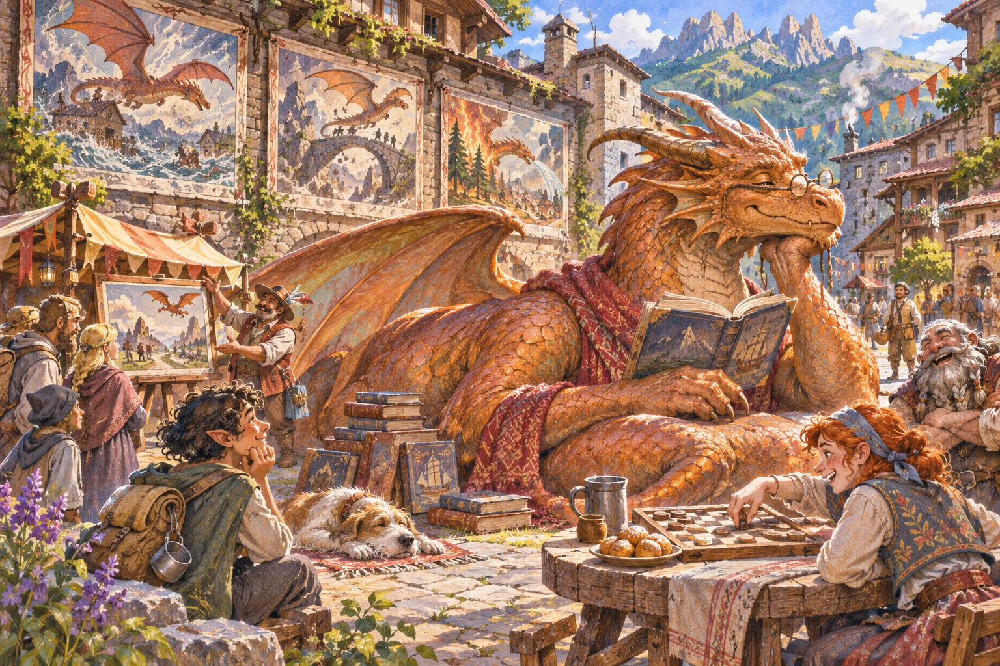
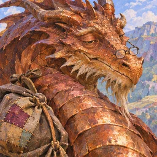
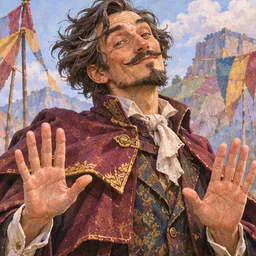
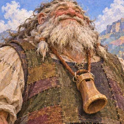

Медный дракон Рухомир объявил, что больше не будет единственным ответом на любую неприятность. Он хочет ходить пешком, читать приключенческие романы и иногда проигрывать в шашки. Но в Кряжах до сих пор продают прогулки с обещанием: «Если что, дракон подхватит». Вашим героям предстоят настоящие спасения, неудобные переговоры и выход на Рваный Венец, где чужая привычка к громкой помощи становится опасной. Сохранится ли дружба, когда спаситель перестанет быть услугой?

Если партия изменила план
Перед чтением вступления сверьте место героев, присутствующих людей и предметы с итогом прошлого вечера. Если условия встречи отпали, сыграйте последствия там, где находится партия. Событие по расписанию может произойти за кадром. Герои узнают о нём от тех, кто был на месте.
Вечер 7. Если Рухомиру снова предлагают взять всю работу
Пусть дракон назовёт, за что готов взяться сегодня. Дайте ожидающим выбрать между разовой помощью и более долгим путём с укрытием. На ужине спросите, кого они позовут в следующий раз, когда Рухомир будет занят своей книгой.
Группа отказалась от задания
Собирать публику для прощального подвига отказываемся. Снимем с тропы афишки с чужим обещанием. Просим снять с прогулки обещание драконьей страховки. Зрители узнают, что выступления им никто не обещал. Рухомир вправе уйти один.
Игроки раскрыли тайну раньше
Прочтём записку у канатов и принесём дракону афишку. Спросим, какие слова на ней его. Доступные свидетельства — Афишка с чужим обещанием, Записка у оставленных канатов. Страховку обещал Денвар; согласия Рухомира под обещанием нет. Просим Денвара самому прочитать обещание перед туристами. Он сам объясняет свой уход. Планируем обычный вечер только для приглашённых, а туристам возвращаем выбор дороги.
Партия уступила поле
Воришки утащили канат; короткое восхождение без него отпадает. Выводим тех, кто предпочёл вернуться без каната. Возвращаем билеты желающим и идём длинной тропой. Дракон никого не обязан подхватывать.
За десять минут до первой игры
- Откройте первый вечер, прочитайте правду мира и участников. Остальные вечера — планы, их исход решают игроки.
- Выберите пакет под фактическое число игроков. Первые три героя — готовое ядро; остальные добавляются по порядку. Возраст игрока не определяет героя.
- Согласуйте темы, длительность и сигнал паузы. Передайте игрокам только players.html; раздатки выдавайте по отдельности после указанного открытия.
- Откройте Мастерскую проекта, создайте личный черновик и импортируйте выбранный JSON через загрузку пакета. Проверьте состав и начало в предпросмотре. Запуск кампании подтверждает ведущий штатным действием.
- Откройте иллюстрацию завязки отдельно. Портреты героев входят в файл для игроков, портреты встречных — в книгу ведущего. Тактические схемы доступны в разделе карт.
Формат и темы
8 вечеров; 150 минут: 15 минут начала и повторения, три сцены по 35 минут, перерыв 10 минут и завершение 20 минут. Для 7–8 игроков обсуждения идут одновременно малыми группами, затем возвращаются к общему столу.
Лоскутные кряжи — солнечная горная окраина с вересковыми склонами, упрямыми великанами и длинными драконьими тенями. Люди здесь пользуются обычной магией, а дороги знают лучше по местам давних подвигов, чем по расстояниям. Медный дракон жив, силён и способен ошибаться. Его размер полезен на просторном склоне и неудобен среди тесных каменных щелей. Герои — самостоятельные искатели приключений третьего уровня; магия доступна по обычным правилам выбранного класса и не является обязательным ключом.
Тёплый юмор, яркие полевые приключения и честные последствия. Опасность реальна; унижение, жестокость и наказание за просьбу о помощи не являются развлечением.
- Разница между дружбой и гарантированной услугой
- Собственная компетентность без запрета просить помощи
- Слава, которой трудно добровольно лишиться
- Смелость остановить красивый, но ненужный риск
Границы
- Рекомендация 12+: высота, падение, страх неудачи и общественные ожидания. Перед игрой обсудить высоту; при необходимости заменить обрывы крутыми склонами и глубоким мягким вереском без изменения решений.
- Нет сексуального материала, натуралистических травм, пыток и обязательной смерти. Поражение обычно означает потерю снаряжения, задержку, плен без жестокости или необходимость принять помощь.
- Нельзя стыдить игрока или героя за потребность в помощи, возраст, физические возможности либо осторожность. Смелое решение и своевременный отказ равно достойны внимания.
- Любой участник может сказать «пауза», изменить подробность или пропустить вопрос без объяснения. Угрозы несовершеннолетним персонажам обсуждаются заранее; возраст героя можно изменить без потери роли.
Люди за столом
- За столом 3–8 игроков плюс один DM; взрослый не становится руководителем автоматически. Возраст игрока не определяет возраст, класс или полномочия героя. Первый говорящий меняется перед каждой сценой.
- Перед общим решением каждый получает короткий ход: сказать, записать или передать выбор; можно добровольно пропустить ход. DM сначала собирает предложения, затем обсуждает последствия, не принимая молчание за согласие.
- Первые трое героев образуют полноценное ядро: спасение, наблюдение и забота. Любое действие, свидетельство и вывод доступны любому герою; герои мест 4–8 добавляют личные ставки, но не ключи к сюжету.
- В сцене обозначьте три одновременные задачи: работа у опасного места, наблюдение и разговор. При 3 игроках назначьте по одной задаче; при 4–8 объединяйте в пары и тройки. Каждые 5–7 минут возвращайте всех к общему положению. Новая опасность не разрешается вне внимания остальных.
- Разделение партии длится не более двух коротких обменов DM с каждой группой. Точка возвращения указана в сцене; если группа задержалась, приносите её наблюдение к общему столу, а не завершайте чужую развязку за кадром.
- При отсутствии игрока герой занимается страховкой либо остаётся в безопасной точке. Его личное решение откладывается; никто не расходует его ресурсы без согласия. Улики, снаряжение и право выбора сохраняются у присутствующих.
- Сложный вопрос предлагается в двух равноценных формах: «Какой конкретной помощи ты хочешь?» и «Что изменится в дружбе, если помощь станет добровольной?». Выбор формы не зависит от возраста; ответ можно отложить.
- Все проверки и изменения ситуации подтверждает DM. Нет автоматических часов катастрофы, новых сил дракона или эффектов, отсутствующих в листах. Объявляйте опасность до действия; нужные сведения доступны через осмотр, разговор либо безопасную трату времени.
Масштабирование группы
3 игрока
Ядро — Яра, Ник и Эда. Одна общая линия действий; каждому отдельная задача и первый выбор в одной сцене. Помощники ведут уже спасённых людей только по прямой просьбе, не решают кульминацию. Необязательный бой: 2 противника, по 12 HP.
4 игрока
Четвёртое место получает наблюдение за тропой или разговор со свидетелем; роли меняются после сцены. Две пары, общий возврат у обозначенного выступа. Необязательный бой: 3 противника, по 14 HP.
5 игроков
Две пары работают с путём и людьми; пятый связывает их сообщения и первым предлагает итоговый выбор. Связующий меняется, это не командир. Необязательный бой: 3 противника, по 16 HP.
6 игроков
Три пары: путь, страховка, участники прогулки. После каждого короткого действия обменяйтесь наблюдениями; никто не бросает три одинаковые проверки вместо решения. Необязательный бой: 4 противника, по 18 HP.
7 игроков
Две пары и тройка; в тройке отдельно действуют наблюдатель, исполнитель и переговорщик. Следующая сцена меняет составы. В общей развязке выслушайте семь разных намерений. Необязательный бой: 5 противников, по 20 HP.
8 игроков
Четыре пары: путь, страховка, люди, связь с Рухомиром или безопасным лагерем. Каждая пара делает вклад, затем один общий выбор. Не добавляйте жертв только ради восьмого места. Необязательный бой: 6 противников, по 22 HP.
Первое чтение вслух
Рухомир бережно ставит у ворот табличку: «Сегодня не совершаю подвигов». Рядом он кладёт дорожную палку толщиной с молодую сосну. «Кто-нибудь знает, сколько пешком до Белой осыпи? Только без ответа: полвзмаха крыла». С Нижнего зубца доносится крик. Над обрывом качается перевёрнутая скамья; с неё отчаянно машут трое любителей красивых видов. Толпа поворачивается к дракону. Он смотрит на вас.
Правда мира · только ведущему
- Рухомир уходит добровольно. Он не болен, не проклят, не лишился силы и не готовит наследника. Ему надоело, что его согласие считают природным явлением; при этом ему самому приятно быть незаменимым.
- Бывший глашатай Денвар продаёт прогулки и рассказы о драконьих спасениях. Он печатает обещание помощи без согласия Рухомира. Это человеческое решение, а не магический договор, тайный приказ или поломка древнего устройства.
- Денвар верит, что эффектное последнее спасение позволит всем спокойно принять отставку. Билеты, облегчённое снаряжение и независимое свидетельство Лиссы показывают обратное: люди начинают рисковать именно потому, что считают помощь гарантированной. Ни одна улика не обязательна.
- На Голой Игле появление Рухомира может усилить порыв воздуха и подтолкнуть зрителей к краю. Если герои заранее предотвращают этот выход, переломом становится их успешное спасение без него: отставка требует убрать чужие обещания, а не просто исчезнуть. Провал не обязателен.
- Рваный Венец — настоящая тесная расселина под нависающей плитой. Взлёт или грубое поднятие плиты рядом с людьми опаснее наземного прохода. Это видимая геометрия, а не внезапная невосприимчивость к магии. Герои выбирают путь и выполняют работу; дракон может по их просьбе держать внешний страховочный канат, не заменяя их.
- Число людей на Венце зависит от действий героев. Предупреждения, возврат платы и остановленный выход уменьшают либо полностью снимают опасность. Нельзя добавлять новых жертв, ломать удачное заклинание или принуждать Денвара к глупости ради запланированной кульминации.
- Финал не решён заранее. Герои могут справиться с ограниченной помощью, выбрать более долгий самостоятельный спуск, отказаться от опасной попытки и дождаться безопасной погоды либо снова сделать Рухомира главным спасителем с его согласия. Цена выражается потерянным временем, деньгами, престижем и изменившейся дружбой, а не обязательной гибелью.
Восемь вечеров
- 1. Кто держит верёвку — Вывести людей с качающейся скамьи, сделать собственные действия заметными и решить, как общаться с уходящим защитником.
- 2. Слишком большой спутник — Пройти осыпь, помочь застрявшему картографу и увидеть, как обещание драконьего спасения уже меняет подготовку людей.
- 3. Плата за старый страх — Пройти спуск, отделить настоящую опасность от заработка на страхе и выбрать отношение к старой славе Рухомира.
- 4. Последний выход на поклон — Провести людей через опасный участок либо предотвратить выход и изменить сам смысл драконьей отставки.
- 5. Чужое обещание — Установить, кому уже обещали невозможную гарантию, передать реальные условия и выбрать цену исправления.
- 6. Тропа на уровне глаз — Проверить реальный подход к Венцу, различить ожидание и беду и выбрать способ следующего участка по наблюдениям.
- 7. Без большой гарантии — Установить реальное положение людей, выбрать выполнимый вывод и согласовать ограниченную помощь без передачи героического дела дракону.
- 8. Заслуженный обычный вечер — Закончить выбранный вывод или возвращение, принять цену самостоятельности и определить дружбу после громкой славы.
Места
Лоскутные кряжи
Вересковые склоны разных цветов, солнечные каменные гребни и длинные тени крупных крыльев.
Полуденный двор
Посёлок вокруг широкого двора, где дракон может присесть, не задев крыш. На стенах висят рисунки прежних спасений.
Нижний зубец
Короткий каменный выступ над поросшим кустарником склоном; здесь любят смотреть закаты со старой подвесной скамьи.
Белая осыпь
Полоса светлого щебня между округлыми валунами. Узкие проходы режут склон, а широкая тропа огибает его снизу.
Вересковый спуск
Пологая дорога с огромным пнём у поворота. Здесь одинаково заметны следы сапог и великанов.
Голая Игла
Тонкий гребень с нижней площадкой и открытым верхним балконом. Ветер поворачивает здесь внезапно и звучно.
Дом аплодисментов
Небольшой дом с открытой верандой и рядами старых стульев. На верёвках сушатся расписанные афиши прогулок.
Слепой уступ
Перегиб пути, за которым не видно следующего шага, пока не приблизишься. Рядом есть спокойная площадка для привала.
Раздвоенная седловина
Широкий каменный седловой проход; одна дорожка ведёт под навес, другая огибает вершину по длинной полке.
Рваный Венец
Расщеплённая вершина с тесной поперечной щелью, узким внутренним карманом и просторным внешним уступом.
Рухомир Медный

427 лет. Огромный медный дракон с потёртым дорожным мешком и крошечными очками для чтения; очки постоянно сползают. Знаменитый защитник Кряжей объявил об отставке. Теперь спрашивает расстояния в шагах и возмущается плохими концовками приключенческих романов.
Место: Полуденный двор
Намерение
Провести обычный день по собственному выбору и остаться дорогим окружающим без обязательного подвига.
Собственные знания
- Он лично спасал людей у Нижнего зубца и помнит широкую нижнюю тропу.
- Его крылья создают сильный поток воздуха; в тесные щели человеческого размера он не помещается.
- Он не давал Денвару согласия обещать будущие спасения и не знает нынешнего списка прогулок.
Секрет или личное убеждение
Ему нравится восторг толпы сильнее, чем он признаёт. Он боится, что после отставки его перестанут приглашать вообще; это страх, а не знание чужих чувств.
Граница и раскрытие
Не читает мысли, не знает все пути и не выдаёт готовое решение. Сам решает, согласиться ли на конкретную просьбу; при согласии не забирает руководство у героев.
Если спросить о том, чего он боится потерять, признаётся в любви к аплодисментам. При предъявлении билета прямо подтверждает отсутствие своего согласия, не объясняя мотивы Денвара за него.
Денвар Громкая Пауза

46 лет. Щегольской короткий плащ, начищенные сапоги и ладони, которыми он словно постоянно просит публику подождать. Бывший глашатай Рухомира водит видовые прогулки по местам знаменитых подвигов и умеет рассказывать смешные истории.
Место: Дом аплодисментов
Намерение
Дать людям последнее большое зрелище и сохранить своё ремесло после отставки знаменитого друга.
Собственные знания
- Он указал Голую Иглу и Рваный Венец в своей программе.
- Вета получила от него билеты с обещанием помощи; часть платы уже потрачена на афиши.
- Он знает верхнюю смотровую точку Венца по старому рассказу, но лично не исследовал внутреннюю расселину.
Секрет или личное убеждение
Он сам написал гарантию драконьей помощи и велел облегчать снаряжение. Он считает, что Рухомир в решающий момент согласится; это самоуверенная надежда, а не тайная договорённость.
Граница и раскрытие
Не заставляет чужие тела двигаться и не знает будущих аварий. Может отменить программу, признать ошибку и работать руками; отказ героев не превращает его автоматически в убийцу.
После прямого вопроса о согласии Рухомира признаёт, что не спрашивал. Если его обвиняют в намерении убить, спорит; доказанная опасность и предложенная работа помогают ему отступить без нового спектакля.
Лисса Верный Возврат

18 лет. Куртка цвета песка, короткая стрижка и обувь, тщательно обвязанная выше щиколоток. Помогает встречать группы после прогулок и хорошо помнит, кто вернулся, а кто ещё идёт.
Место: Дом аплодисментов
Намерение
Чтобы её предупреждение дошло до участников, а не исчезло под очередной красивой речью.
Собственные знания
- При ней Денвар сказал участникам, что обратный спуск не понадобится: дракон подхватит их после финального поклона.
- Она записала имена записавшихся и место, где можно перехватить их перед Слепым уступом.
- Она не была внутри Венца и не знает состояния его камней.
Секрет или личное убеждение
Она отказалась сопровождать облегчённую группу, но стесняется сказать, что испугалась. Она слышала обещание Денвара лично, а не от соседей.
Граница и раскрытие
Не отправляется на опасную высоту ради доказательства смелости. Готова передать сообщение, проверить список или ждать возвращения в безопасной точке.
Если дать ей закончить без перебивания, пересказывает услышанную фразу и показывает собственную запись. Убеждение и дружба с определённым героем не требуются.
Орель Медленный Карандаш

63 лет. Лицо в солнечных морщинках, широкий берет и складная доска для зарисовок, слишком большая для его рюкзака. Рисует обычные тропы с земли и сердится на карты, где расстояние измерено драконьими взмахами.
Место: Белая осыпь
Намерение
Закончить полезную схему пути и выбраться из неудобной щели, не превращая происшествие в легенду о собственной ловкости.
Собственные знания
- У Белой осыпи есть длинный устойчивый обход.
- Он видел, как носильщики оставили тяжёлые канаты по записке Денвара.
- На старом рисунке Венца он отметил наружную полку; сегодняшнего состояния вершины не знает.
Секрет или личное убеждение
Он полез за доской туда, куда не стоило идти одному. Его утверждение «почти выбрался сам» — попытка сохранить достоинство, а не надёжная оценка ситуации.
Граница и раскрытие
Не является всезнающим картографом. Помечает, что видел сам и когда; готов исправить рисунок по свежим наблюдениям героев.
После помощи или спокойного разговора отдаёт записку о снаряжении. Старый рисунок предоставляет по просьбе, сразу предупреждая, что осмотр на месте важнее бумаги.
Бурдаш Большой Пень

91 лет. Широкоплечий великан в просторном жилете; носит на шее деревянный свисток размером с сапог. Отдыхает у поворота и любит поспорить с путниками. Когда-то Рухомир прогнал его с дороги особенно громким рыком.
Место: Вересковый спуск
Намерение
Чтобы люди перестали угрожать ему чужим именем, прежде чем вообще поздороваются.
Собственные знания
- Через вереск проходит обычная широкая тропа, доступная без разрешения дракона.
- Жёлтые плащи недавно стали требовать деньги за «охрану от великана», не договариваясь с ним.
- Он видел свежие следы небольшой группы, направившейся к Голой Игле.
Секрет или личное убеждение
Он помнит не драку, а то, как бросил свой мешок и убежал на глазах у детей. С тех пор он преувеличивает старую вражду, хотя возвращаться к ней не хочет.
Граница и раскрытие
Не отвечает за всех великанов и не доказывает доброту подчинением. Может уступить дорогу без дружбы и без нового унижения.
При вопросе о том, что ему действительно обещали или угрожали, рассказывает об имени дракона и показывает свободную тропу. Извинение ценит, но путь не удерживает заложником извинения.
Вета Точный Счёт

38 лет. Зелёная шляпа, чернильные пальцы и деревянная коробка с цветными билетами. Записывает участников прогулок и выдаёт билеты. Считает сдачу быстрее, чем Денвар успевает закончить вступление.
Место: Дом аплодисментов
Намерение
Честно разобраться с уже принятыми деньгами и сохранить уважение людей, которых она записала.
Собственные знания
- Точный текст билета и сколько людей записалось к моменту разговора.
- Какие участники уже сообщили об уходе, а чьи отметки ещё не проверены.
- Она никогда не слышала обещания помощи лично от Рухомира.
Секрет или личное убеждение
Она поверила устному заверению Денвара о согласии дракона. Часть денег всё ещё лежит у неё в коробке; это доступные средства для возврата, а не тайный клад.
Граница и раскрытие
Не скрывает сведения об опасности ради репутации. Не может вернуть уже потраченные Денваром деньги без его участия.
При сравнении билета с заявлением Рухомира показывает сохранившиеся деньги и список. Нужен конкретный вопрос; проверка не нужна для доступа к фактам.
Зоя Растрёпа

22 лет. Яркая повязка на волосах, походные сапоги и несколько рисунков пейзажей в прозрачном чехле. Любит красивые виды и собирается впервые увидеть вершину без драконьего силуэта перед солнцем.
Место: Голая Игла
Намерение
Сама выбрать настоящее приключение и вернуться с собственным рассказом.
Собственные знания
- Свой билет, собственное снаряжение и услышанные от Денвара обещания.
- Кто из её спутников устал во время уже пройденной части пути.
- Она не знает, что происходит за перегибом следующего уступа.
Секрет или личное убеждение
Она выбрала более трудную прогулку, поверив гарантии спасения. Её желание идти дальше может измениться при честном объяснении риска; она не обязана упрямиться.
Граница и раскрытие
Родство с Ником не делает её послушной ему и не делает Ника обязательным участником разговора. Каждый может предложить ей информацию и выбор.
Если спросить, почему она считала маршрут подходящим, показывает билет и говорит о гарантии. При описании конкретных вариантов сама выбирает продолжение или возвращение.
Рен Ровный Шаг

29 лет. Аккуратно уложенные волосы, одинаково затянутые ремни и заметно новый дорожный плащ. Участник прогулки, который взялся считать людей и следить, чтобы никто не отстал.
Место: Раздвоенная седловина
Намерение
Довести спутников обратно и перестать изображать опытного горца.
Собственные знания
- Кого видел на последнем совместном привале и кому отдал воду.
- Какие указания получил от Денвара перед выходом.
- Он умеет сосчитать людей, но не оценить прочность нависающей плиты.
Секрет или личное убеждение
Он прочёл о горах много, но в серьёзный поход вышел впервые. Он может признаться в этом, если ему предложат конкретную посильную задачу вместо проверки достоинства.
Граница и раскрытие
Не получает внезапные навыки ради удобства DM. Может передавать слова, поддерживать разговор и вести людей по уже проверенному пути.
На вопрос о прошлых походах честно признаёт неопытность. При предложении пересчёта людей сразу сообщает наблюдаемое, не выдавая предположения за местонахождение отсутствующих.
Улта Долгий Спуск

56 лет. Плотная накидка, короткая седая чёлка и лёгкая трость, исчерченная зарубками пройденных расстояний. Ходит по Кряжам медленно и знает цену сухому месту для остановки.
Место: Слепой уступ
Намерение
Помочь с возвращением, сохранив право не лезть на вершину самой.
Собственные знания
- От Раздвоенной седловины можно уйти по длинной полке, потратив большую часть дня.
- У Слепого уступа есть сухой защищённый навес и место для ожидающей группы.
- Она видела сегодняшний ветер на нижнем пути; прогноз на вершине ей неизвестен.
Секрет или личное убеждение
Она раньше соглашалась на опасные переходы ради чужой похвалы и теперь сознательно выбирает длинную дорогу. Она не считает этот опыт универсальным уроком для всех.
Граница и раскрытие
Согласна принять уже выведенных людей и поделиться наблюдениями. Не обязана идти в опасную щель и не заменяет выбор героев приказом старшего.
При обсуждении времени и запасов показывает оба пути и безопасное ожидание. Личную причину осторожности рассказывает, только если разговор действительно касается её, а не поиска секретного ключа.
Возможные финалы
Канат в медных лапах
Условия: Герои сами выбрали и выполнили безопасный вывод людей; Рухомир принял ограниченную задачу, а обещание безусловного спасения отозвано.
Дракон остаётся другом и иногда помогает по просьбе. Герои известны за конкретное дело, Денвар либо исправляет афиши, либо теряет их доверие. Прогулка Рухомира наконец заканчивается там, где он хотел.
Цена: Рухомир отдаёт главный поклон другим; герои отказываются обещать собственную безошибочность. Денвар возвращает часть дохода, если согласился исправить ущерб.
Длинный путь своими ногами
Условия: Герои безопасно завершили поход без участия дракона либо заранее отменили рискованный выход и организовали спокойное возвращение.
Люди возвращаются по выбранному героями маршруту. Рухомир видит результат после дела; его дружба больше не подкрепляется обязанностью постоянно присутствовать.
Цена: Долгий маршрут съедает день и дорожные запасы. Герои могут упустить выгодный заказ; Рухомир переживает, что его не позвали, и должен проговорить это без требования новой зависимости.
Ещё один громкий подвиг
Условия: Рухомир согласился на широкое вмешательство, а герои подготовили безопасное место и приняли связанные с этим последствия.
Спасение удаётся в пределах реально выбранного плана; людям снова хочется превратить дракона в постоянную службу. Герои решают, как дальше общаться, не объявляя отставку навсегда невозможной.
Цена: Желаемая обычная прогулка откладывается; часть заслуги героев снова исчезает за знаменитым именем. Возобновление постоянной работы не происходит автоматически.
Мы остановились вовремя
Условия: Герои отвергли опасное продвижение, сохранили связь с ожидающими людьми и обеспечили воду, укрытие или безопасную точку ожидания доступными средствами.
Возвращение происходит после улучшения условий либо с дополнительной обычной помощью. Стол завершает реальную историю предусмотрительности, а не принудительную катастрофу.
Цена: Теряются билеты, время и часть репутации отчаянных смельчаков. Признание приходит от конкретных спасённых людей, а не от любителей зрелищ.
Раздатки · выдавать постепенно
- Записка Рухомира — После первого спасения, когда герои спрашивают Рухомира о намерениях либо он предлагает показать написанное утром.
- Первые записи о пешем ходе — Рухомир показывает карточку на Белой осыпи после того, как герои выбирают маршрут или помогают Орелю.
- Слова Бурдаша о старой встрече — После добровольного рассказа Бурдаша на Вересковом спуске; можно прочесть вместо длинного устного монолога.
- Билет на последний поклон — При осмотре «Билет с гарантией крыльев» на Голой Игле либо когда Вета выдаёт чистый экземпляр в Доме аплодисментов.
- Запись Лиссы — После получения «Запись Лиссы на обороте списка» через разговор, записку Веты либо подтверждение Рена; не выдавать как начальную справку.
- Два подхода к Венцу — После получения «Рисунок вершины с земли» и обсуждения текущего осмотра; старая дата произносится вслух.
- Записка о конкретной помощи — Когда в седьмой встрече герои предлагают Рухомиру ограниченную задачу; при выборе без дракона карточку можно оставить невыданной.
- Один свободный вечер — В финале после возвращения, если герои сохраняют или заново предлагают дружбу Рухомиру; содержание не подразумевает принятия приглашения.
Как читать игровые проверки
Проверки характеристик и навыков, переговоры, часы и последствия из книги разрешает ведущий. Они не являются дополнительными автоматическими правилами приложения. Улики доступны без обязательного успешного броска. Подготовленные встречи начинаются только по решению ведущего; исходы и эпилоги заранее не записаны.
Статус подготовки
Авторская кампания подготовлена отдельным агентом, запрошенным как GPT-6 Astra / max. Проверки пакетов и игровых границ описаны в verification.json и общем отчёте. Живой плейтест с людьми ещё не проведён. Локальная папка с исходниками и книгой предназначена ведущему.